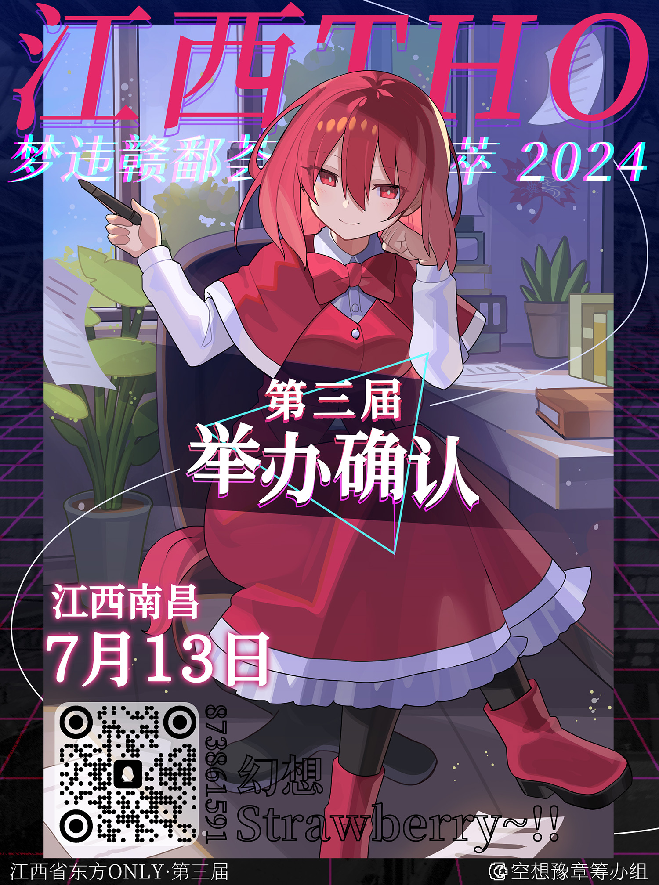

关于江西THO
江西THO全称“江西THO-梦违赣鄱荟萃”，是由空想豫章筹办组在江西南昌举办的，东方Project同人线下活动系列。
目前已经举办了两届，共三个活动：
| 届数 | 举办日期 | 活动类型 | 活动名 |
|---|---|---|---|
| 第一届 | 2021/7/10 | 展会 | 秋水鸣歌宴 |
| 第二届 | 2023/7/15 | 展会 | 落霞梦绘市集 |
| 第二届 | 2023/7/16 | 交响音乐会 | 秋水幻音盛宴 |
在筹办活动的同时，我们也会进行同人产出。
比如在第一届，我们与各作者合作制作了一张同人专辑：《Tunes_In_Forgotten_Land》
在第二届，我们联合江西所有地区的东方同好会四处取材，制作了一本东方x江西地级市风景的画集：《落霞绘梦~Into Fantasy》
第三届正在筹办中！
江西THO3零宣海报
第三届江西THO将于7月13日举办！
在年前，我们发布了一个THO前期调查问卷，并说明如果在期限内收到三百份以上的有效回答今年就办江西THO。如今期限已过，我们收到了近四百份有效回答，感谢大家的热情参与！
今年江西THO以旧作为主题，活动名字为：
幻想Strawberry~!!